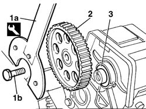
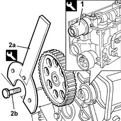
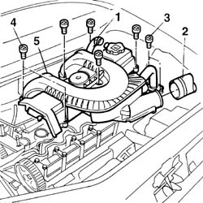
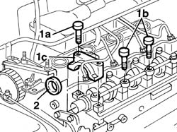
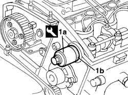
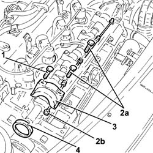
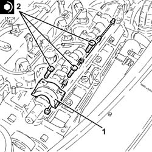
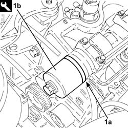
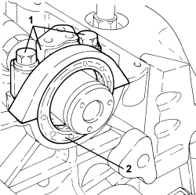

1036B36 front crankshaft oil seal-r r with timing belt removed
- Path
- Procedures > 10 ENGINE > 1036 TIMING SYSTEM > 1036B CAMSHAFT (1) IN CYLINDER HEAD (1) > 1036B36 front crankshaft oil seal-r r with timing belt removed
- Kind
- repair procedure (removal / refitting; the operation number is the code)
- Applies to
- engines: 1.2 8v, 1.4 8v, 1.9 JTD 8V, 1.9 DIESEL; all production periods
- Interactive page
- https://sloeber94.github.io/elrnDB-fDbl/en/#/2584213
Applies to: engines: 1.2 8v; all production periods
 Removing
Removing
 Refitting
Refitting1. Using the appropriate tool (1a) to lock the rotation of the pulley and undo the fixing bolt (1b).
Description | Code | |
|---|---|---|
1a | Support for counter-torque | 1.860.831.000 |
2. Remove the toothed driven pulley.
3. Remove the front oil seal ring from its seat.

Applies to: engines: 1.2 8v; all production periods
Refitting
Removing1. Use tool (1a) to fit a new oil seal (1b) in its seat on the front cover.
Description | Code | |
|---|---|---|
1a | Fitting tool | 1.860.882.000 |
Fit the drive pulley in the special housing on the camshaft.
2. Use the tool (2a) to tighten the bolt (2a) fixing the pulley to torque.
Description | Code | |
|---|---|---|
2a | Support for counter-torque | 1.860.831.000 |
Fastening | Component | dia | Value (daNm) | |
|---|---|---|---|---|
1b | Bolt | TIMING DRIVEN PULLIES | M10 X 1.25 | 7 |

Applies to: engines: 1.9 DIESEL; all production periods
Removing
Refitting1. Disconnect the engine oil vapour recovery pipe from the cam cover.
2. Disconnect the connection sleeve to the filter casing from the cover.
3. Undo the bolts fixing the exhaust gas supply pipe from the EGR valve.
4. Undo the retaining bolts.
5. Remove the cam cover with build-in vapour intake ducts.
Recover the underlying gasket.

Applies to: engines: 1.9 DIESEL; all production periods
Op. 1032B40 TOOTHED DRIVEN PULLEY (ONE) - R + R WITH TIMING BELT REMOVED
1. Undo the bolt (1a) fixing the cap, undo the fixing bolts (1b) and gently lift the camshaft bearing lubrication pipe, then remove the cap (1c).
2. Remove the camshaft oil seal.

Applies to: engines: 1.9 DIESEL; all production periods
Refitting
RemovingFit the camshaft cap.
Tighten the bolts fixing the cap and the lubrication pipe.
Tighten the bolts fixing the caps to torque.
Fastening | Component | dia | Value (daNm) | |
|---|---|---|---|---|
- | Bolt | CAMSHAFT CAPS | M6 | 1 |
Fastening | Component | dia | Value (daNm) | |
|---|---|---|---|---|
- | Bolt | CAMSHAFT CAPS | M7 | 1.5 |
1. Fit the new oil seal (1b) on the camshaft using the tool (1a).
Description | Code | |
|---|---|---|
1a | Fitting tool | 1.860.824.000 |

Applies to: engines: 1.9 DIESEL; all production periods
Op. 1032B40 TOOTHED DRIVEN PULLEY (ONE) - R + R WITH TIMING BELT REMOVED
Fit a new gasket on the cam cover.
Fit the cam cover with built-in intake ducts and tighten the bolts to torque.
Fastening | Component | dia | Value (daNm) | |
|---|---|---|---|---|
- | Bolt | CAM COVER | M6 | 1 |
Connect the engine oil vapour pipes to the cam cover.
Connect the connection sleeve to the filter casing to the cover.
Tighten the bolts fixing the exhaust gas supply pipe to the EGR valve to torque.
Fastening | Component | dia | Value (daNm) | |
|---|---|---|---|---|
- | Bolt | EGR VALVE PIPE | M8 | 2.5 |
Applies to: engines: 1.9 JTD 8V; all production periods
Removing
RefittingProceed with the removal
Op. 1032B61 TIMING BELT PULLEY - R.R. WITH TIMING BELT REMOVED.
Proceed with the removal
Op. 1016A26 CAM COVER WITH BUILT IN OIL VAPOUR SEPARATOR - R.R..
1. Loosen the front camshaft cap fixing bolts.
2. Undo both bolts (2a) and raise the pipe lubricating camshaft journals (2b) as necessary.
3. Remove the front camshaft cap.
4. Prise up and remove the crankshaft front oil seal cover.

Applies to: engines: 1.9 JTD 8V; all production periods
Refitting
Removing1. Place the front camshaft cap back in its housing.
2. Tighten the bolts fixing the removed camshaft caps to the recommended torque.
Fastening | Component | dia | Value (daNm) | |
|---|---|---|---|---|
2 | Bolt | CAMSHAFT CAPS | M7 | (Cylinder head side) 1.4 - 1.7 |

Applies to: engines: 1.9 JTD 8V; all production periods
1. Fit the a new crankshaft front oil seal (1a) using the tool (1b).
Description | Code | |
|---|---|---|
1b | Fitting tool | 1.860.824.000 |

Applies to: engines: 1.9 JTD 8V; all production periods
Proceed with the refitting
Op. 1016A26 CAM COVER WITH BUILT IN OIL VAPOUR SEPARATOR - R.R..
Proceed with the refitting
Op. 1032B61 TIMING BELT PULLEY - R.R. WITH TIMING BELT REMOVED.
Applies to: engines: 1.4 8v; all production periods
Removing
RefittingOp. 1016A20 SINGLE TAPPET COVER -R.R AND REPLACE GASKET
Op. 1032B60 DRIVEN BELT PULLEY(S) - R.R.
1. Unscrew the bolts and remove the camshaft cap.
2. Remove the camshaft front oil seal to be replaced.

Applies to: engines: 1.4 8v; all production periods
Refitting
Removing- Place a new camshaft front oil seal in its housing.
- Place the camshaft front cap back in its housing and secure it tightening the bolts to the recommended torque.
Value daNm | Fastening | Component | dia | |
|---|---|---|---|---|
- | 1.8 ÷ 2.2 | Bolt | Camshaft caps | M8 |
Topics linked from this page (5)
- 1016A20 single cam cover - r + r and replace gasket
- 1016A26 cam cover with built in oil vapour separator r r
- 1032B40 toothed-driven pulley (one) - r + r with timing belt removed
- 1032B60 bolt pulley - r r
- 1032B61 timing belt pulley - r r